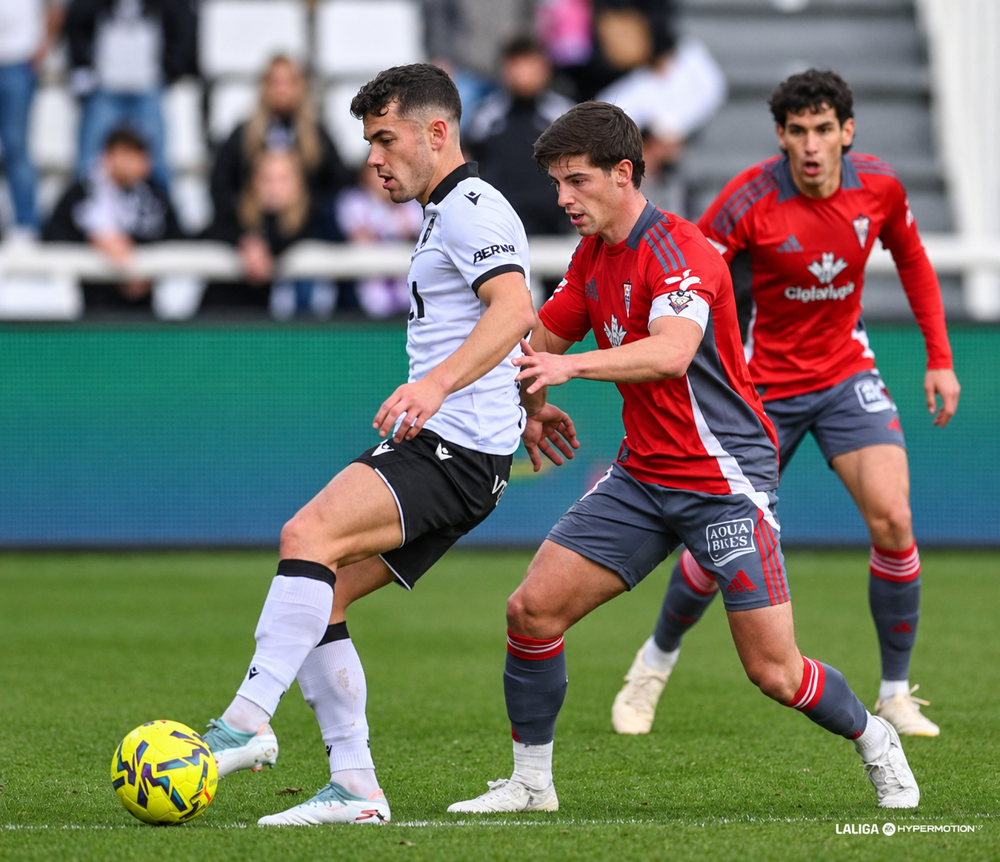

El Burgos CF está pasando por un mal momento en cuanto a juego en las últimas jornadas.
No practica un buen fútbol, pero aun así sigue sacando los resultados adelante. En parte, gracias a los galones y la experiencia que tiene en la categoría, lo que está decantando la balanza hacia el lado blanquinegro.
Esto se puede resumir también con la competitividad, muchas veces más valiosa que el buen juego. Los equipos que acaban ascendiendo no son los que mejor juegan, sino los que mejor compiten. Y el Burgos está demostrando que sabe plantar cara a cualquier rival con sus armas totalmente válidas, como la calidad individual de Forés, Llabrés, Karrikaburu o Unai Vencedor. Jugadores que se ficharon para que tirasen del carro en momentos difíciles, donde se les necesita.
Porque la explicación que tienen estas jornadas no tan buenas es el fútbol en sí, un deporte que funciona por rachas. Hay momentos durante una temporada en los que te sale todo bien y otros en los que te podría ir mejor. Quizás el Burgos esté pasando por un tramo peor si hablamos de sensaciones, pero estoy seguro de que, con el paso de las jornadas y encadenando varios encuentros buenos, conseguirá mejorar y encontrar su mejor versión. Es decir, la cuestión está en el tiempo y la paciencia.
El nivel de muchos jugadores que están yendo a menos puede ser otra explicación al «mal momento». En concreto, el de los futbolistas que conforman el centro del campo y que son el enlace de un equipo que necesita ser protagonista con balón para ser peligroso.
Como los equipos profesionales, jugadores como Unai Vencedor, José Gragera o Curro Sánchez también tienen periodos en los que muestran un nivel más o menos alto. Es muy complicado mantener un buen rendimiento durante toda una temporada. Ni los grandes futbolistas de Primera lo consiguen.
En definitiva, todo lo comentado son aspectos normales del fútbol que, con el tiempo, se conseguirán mejorar. Si los de Sergio Francisco no tuvieran capacidad o no hubieran demostrado que son un equipo a tener en cuenta, el problema sería mayor. Con resultados y siendo quintos en la clasificación, podemos estar tranquilos de momento.